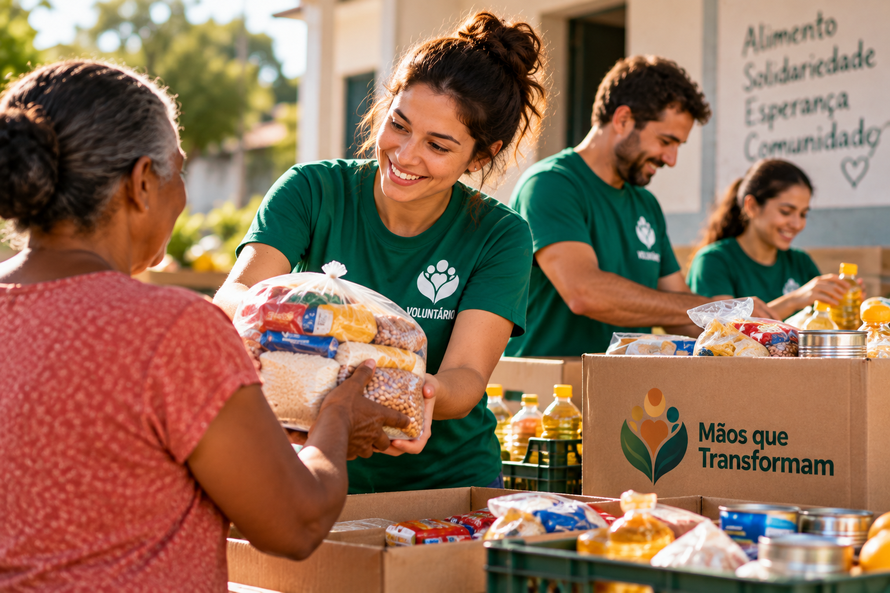
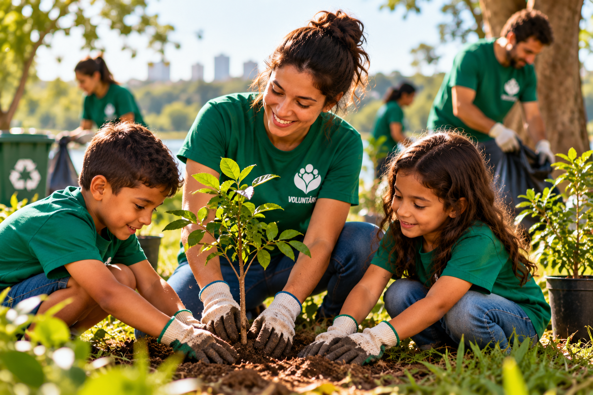

Educação para Todos
O projeto oferece reforço escolar, oficinas educativas e atividades de incentivo à leitura para crianças e adolescentes da comunidade.
Quero participarPessoas. Oportunidades. Um futuro melhor.
Conheça algumas das iniciativas desenvolvidas pela ONG Mãos que Transformam para contribuir com a educação, a segurança alimentar e a preservação do meio ambiente.
O projeto oferece reforço escolar, oficinas educativas e atividades de incentivo à leitura para crianças e adolescentes da comunidade.
Quero participar
Arrecadamos e distribuímos alimentos para famílias em situação de vulnerabilidade, fortalecendo a solidariedade e o apoio comunitário.
Quero participar
Promovemos ações de conscientização ambiental, plantio de árvores, revitalização de espaços públicos e atividades de educação ambiental.
Quero participar